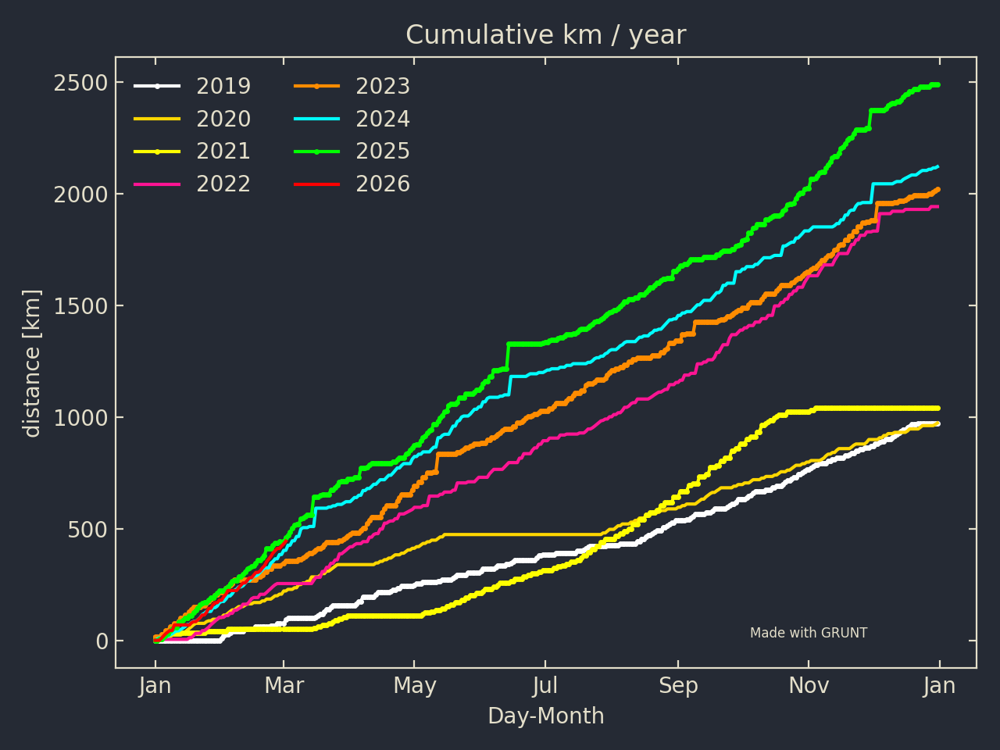
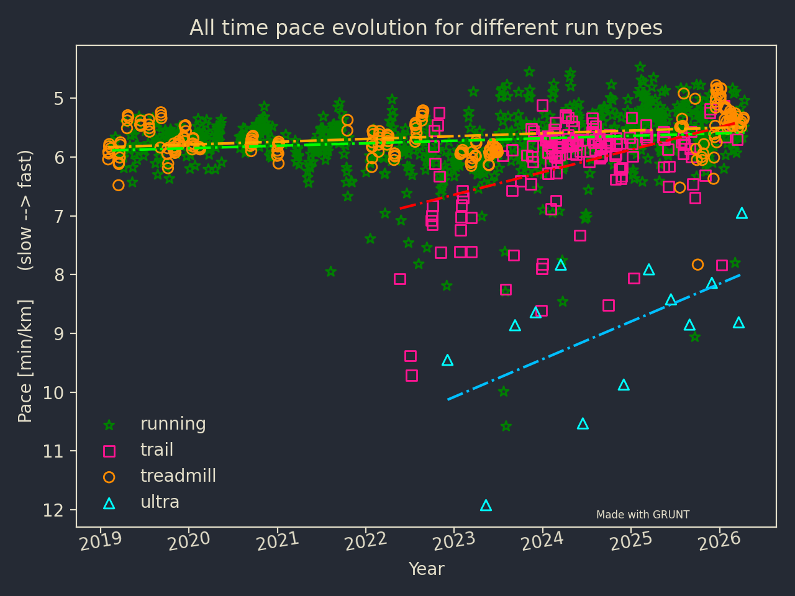
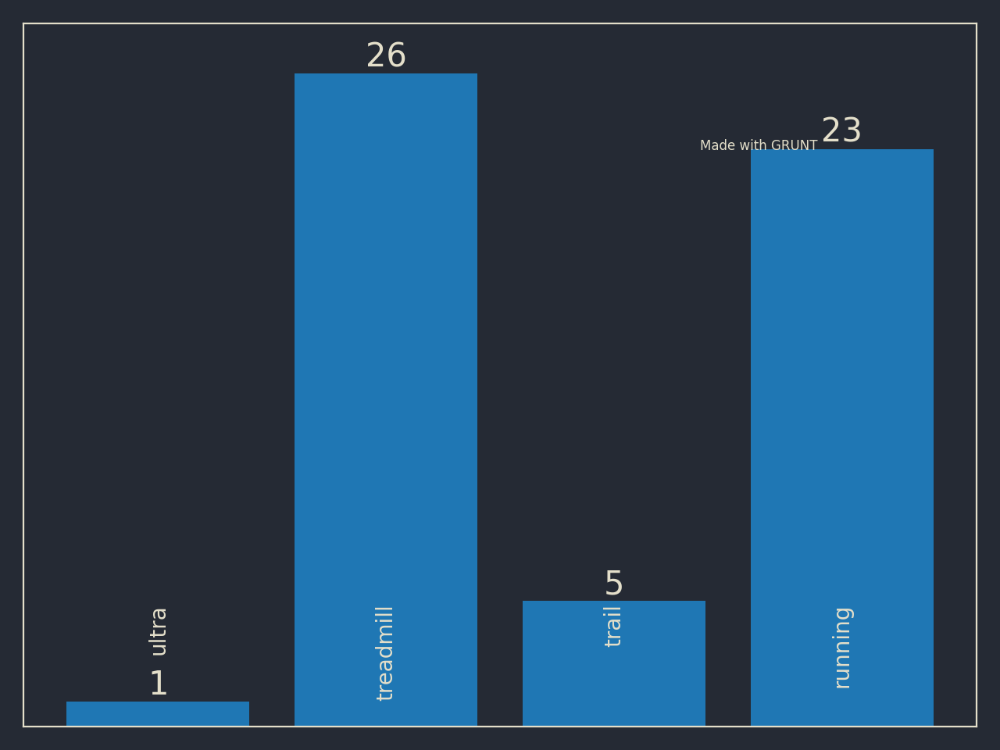

{% include base_path %}
This is where I post all the races I do! It goes from an easy 5k to 100k+. I have (more or less painful) memories from all of them :D



Races (sub21k): 6
Marathons: 7
Races (Half Marathon to 30k): 14
Ultra-Marathons (sub 100k): 10
Ultra-Marathons (over 100k): 1
{% for post in site.runs reversed %}
{% include archive-single-run.html %}
{% endfor %}